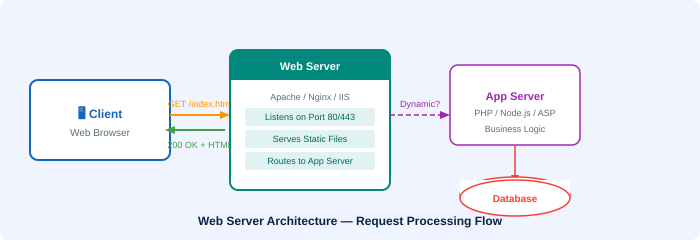

🗄️ Web Servers
Programs that store and serve web content to clients over HTTP

A web server (also called an HTTP server or application server) is a program that serves content using the HTTP protocol. Content can include HTML documents, images, videos, and other web resources — either pre-existing (static) or generated on-the-fly (dynamic).
What is a Web Server?
A web server is both the hardware (the physical computer) and the software (the program) that stores and delivers web content. At its core, a web server serves files from disk across the network to users' web browsers. This exchange is mediated by HTTP (Hypertext Transfer Protocol).
Static vs Dynamic Content
| Type | Description | Example |
|---|---|---|
| Static Content | Files served directly from disk, unchanged | HTML files, images, CSS, JS files |
| Dynamic Content | Generated on-the-fly based on user request | Search results, personalised dashboards, database-driven pages |
How a Web Server Works
- A user enters a URL into their browser (web client).
- The browser sends an HTTP request to the web server at that address.
- The web server locates the requested resource (file, database query, etc.).
- The server sends back an HTTP response with the content.
- The browser receives and renders the content for the user.
Popular Web Server Software
Common Web Servers
- Apache HTTP Server — the most widely used web server software in the world (open-source)
- Nginx — known for high performance and low memory usage
- Microsoft IIS — Internet Information Services, built for Windows Server
- Node.js — JavaScript-based runtime often used as a web server
- LiteSpeed — high-performance commercial server
Web Server vs Application Server
While a web server handles HTTP requests and serves static files, an application server performs more complex processing — running business logic, executing code (PHP, Python, Java, .NET), and querying databases.
A web application typically requires both: the web server handles incoming requests and routes them, while the application server processes them and generates dynamic responses.
💡 Key Fact: Web servers run continuously, listening on port 80 (HTTP) or port 443 (HTTPS), ready to respond to millions of simultaneous requests. Large websites like Google run on thousands of servers to handle global traffic.